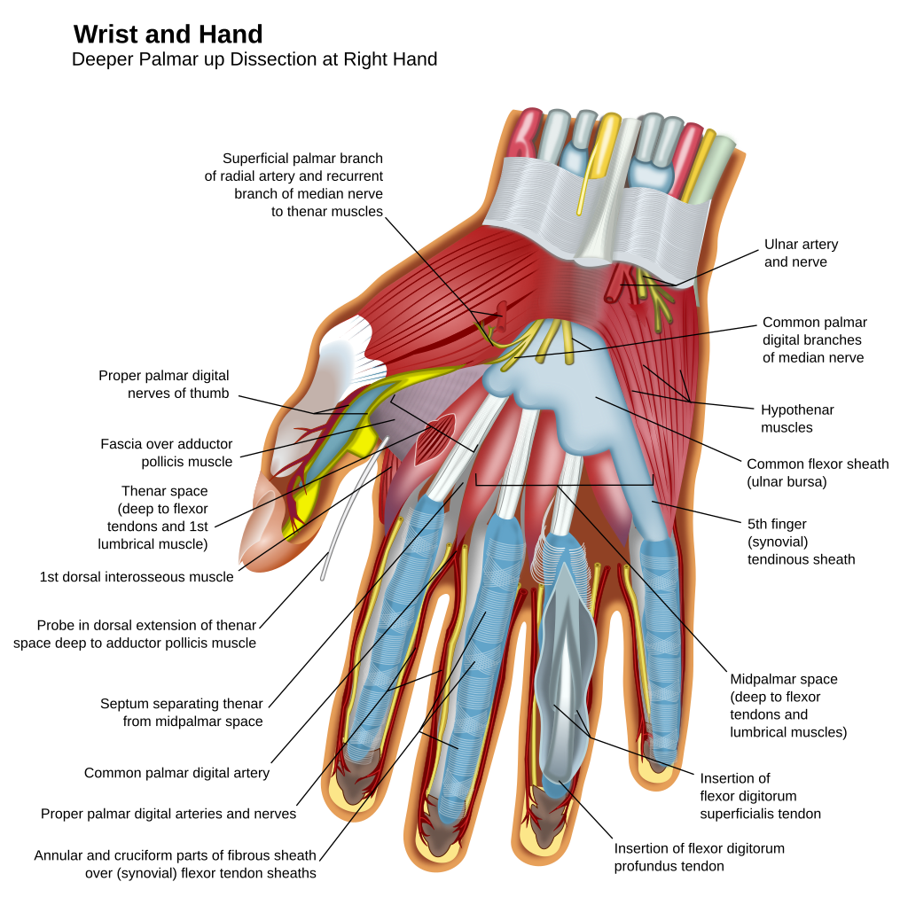

You:
The topic that I would like to discuss is: muscles of the hand.
Curious Student
Why are the intrinsic muscles of the hand divided into specific compartments, and how does this anatomical
organization contribute to hand function?
How do the different types of muscle fibers in hand muscles influence their ability to perform precise, fine
motor movements versus sustained gripping actions?
Why is the opposition of the thumb considered such a critical function in human hand anatomy, and how do the
thenar muscles facilitate this movement?
How do the lumbrical muscles, which attach to tendons rather than bones, contribute uniquely to the
coordination of finger flexion and extension?
Why is there a difference in the innervation of the intrinsic muscles of the hand, with some being supplied by
the median nerve and others by the ulnar nerve, and how does this affect motor control?
You:
1. the muscles of the hand have fine motor movements.
2. they are required for gripping movements.
3. the extrinsic muscles provide the crude movements while the intrinsic ones provide the fine motor control.
4. they are smaller and used more extensively and are more delicate so they are more prone to injury.
5. Different nerves are involved in the innervation of different muscles so if one is damaged, only those
muscles will be damaged.
Visual Learner
Thank you for the detailed explanations! Since you're discussing the hand's anatomy and functionality, could you
provide a hand-drawn sketch or an image to illustrate the following points?
1. The intrinsic muscles of the hand (e.g., lumbricals, palmar and dorsal interossei).
2. The arrangement of tendons and ligaments (e.g., flexor tendons, flexor retinaculum).
3. The extrinsic muscles originating in the forearm.
4. The thenar and hypothenar eminences.
5. The palmar and dorsal interossei and their functions.

Clinical Learner
1. The median nerve controls muscles in the forearm and lateral part of the hand so muscle movement and sensation
there would be affected.
2. An MRI would help in the differentiation.
3. I would ask the person to flex their hand in resistance and check the sensory sensations in the medial part
of the hand and the arm.
4. Extensive use of tools or trauma can affect hand muscles.
5. The hand would appear cyanotic and cold; prolonged hypoxia may lead to necrosis.
Supervisor:
Report on User's Explanation
What Was Explained Well
1. Correctly identified median nerve function affecting forearm and lateral hand muscles.
2. Appropriately suggested MRI for differentiation.
3. Described reliable physical examination techniques.
4. Recognized trauma and repetitive tool use as risk factors.
5. Accurately described cyanosis and potential for tissue necrosis in hypoxia.
Areas for Improvement
1. Clarify that the median nerve affects the lateral, not medial, hand.
2. Elaborate on MRI's role (nerve compression, structural damage).
3. Expand causes of hand issues: systemic disease, vascular issues.
Suggested Topics for Further Study
Anatomy of the median nerve and motor/sensory pathways.
Physical exam techniques for differentiating nerve injuries.
Imaging modalities for nerve and muscle pathology.
Common causes and pathophysiology of hand conditions.